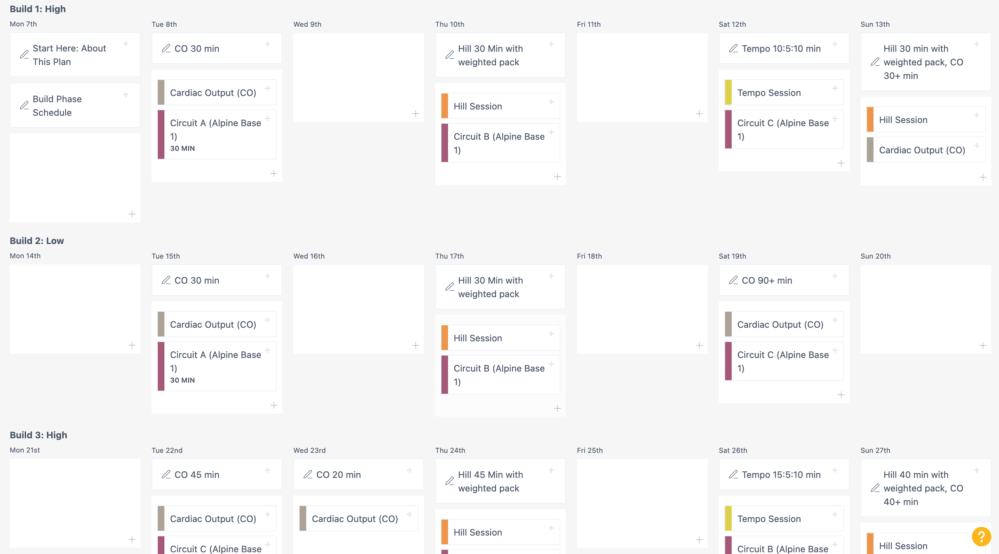

20/4/26
A principle-based plan for getting started in mountain environments or big walls.
This is a 12-week program aimed at getting you from pretty-much not doing anything to ready for long days with lots of vertical gain and loss.
The first six weeks are the BASE phase, and cycle in volume. Weeks 1, 2, and 3 are progressively harder, followed by a lower-volume week on week 4. Week 5 starts at the same volume as week 3, and then week 6 is the longest and hardest of the BASE phase.
The second six weeks are the BUILD phase. In this phase, your training volume starts pretty high. We’ll see a steady increase in total minutes per week, but only slightly. Instead of adding more and more to each workout, we’ll slowly convert to bigger days on the weekends, and more days of rest during the weeks. This allows our bodies to get used to doing a bunch of work all at once…nothing worse than training to a 2-hour time limit every day, then realizing your approach day in the mountains is going to be 4 times that long!
In the BUILD PHASE we alternate between a “low” volume week and a “high” volume week, so you end up with three of each by the end of the program.
So how should we time this? Our best results come from counting back 13 weeks from your departure date. Often, the trip to the mountains is only a day or two. If we finish our hardest session on a Thursday, and start moving into the alpine on Saturday, we risk being under-recovered when we hit the trail. Better to stop the hard training the previous Saturday, and then “coast” your fitness to the departure day. If you have a lot of travel or prep days (such as spending 3-4 days in transit and sightseeing before putting your pack on, you can adjust the training slightly.
Alpine fitness is largely about general work capacity, and less about high-end aerobic endurance. Unless you are competing on an elite level or trying to set speed records (in which case you clearly would not want to do this program), you are moving relatively slowly, can take rest breaks, and have to carry a lot of stuff. Running, skiing, and swimming are all great activities for building cardiorespiratory fitness, but they lack in applicability to the demands of the mountains. I’ve talked to guides year after year about how their clients have “strong lungs and weak legs,” developed from too much unloaded work. It doesn’t matter how big an engine your car has if the tires are all flat.
Alpine Base Fitness I is built around developing aerobic capacity and general strength. The aerobic capacity will first be built very generally (you can run, swim, etc. here), and then be progressively more specific to mountains. Likewise, the strength will start off on the more general side, and will move to being more and more mountain-specific.
You’ll also have time for a bit of climbing if you still want to do that. Most of us don’t pick alpine objectives that will push our technical rock limits. It is essential to eliminate any training that doesn’t directly enhance your goal. If you’re considering doing this plan AND a performance bouldering plan—or whatever—understand that your results will be less than ideal, at best.
20/4/26
The second six weeks are the Build phase. In this phase, your training volume starts pretty high. We’ll see a steady increase in total minutes per week, but only slightly. Instead of adding more and more to each workout, we’ll slowly convert to bigger days on the weekends, and more days of rest during the weeks. This allows our bodies to get used to doing a bunch of work all at once—nothing worse than training to a 2-hour time limit every day, then realizing your approach day in the mountains is going to be 4 times that long!
In this phase we alternate between a “low” volume week and a “high” volume week, so you end up with three of each by the end of the program.
The Build Phase calls for two short sessions during the week, and two long sessions on the weekend. If your schedule is more flexible, you can adjust the days a bit, but the back-to-back days on the weekend are a feature of the training and should not be split. Part of the plan is “digging a hole” on those long weekend
